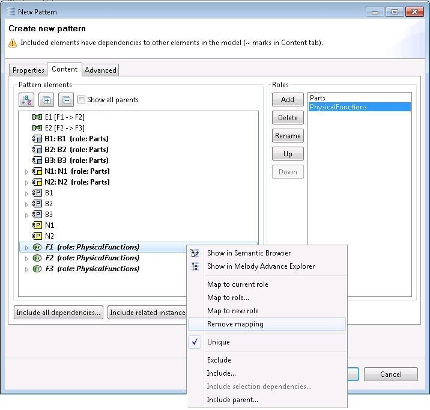

Roles
Roles are the explicit integration points of a pattern. Integration refers to how pattern elements are “inserted” in a model when the pattern is being applied. A role is mapped to the pattern elements it has to “insert”. By default, a role supports two insertion modes:
Addition: the pattern elements are stored in some container element in the model;
Merge: pattern elements are merged with existing model elements in the model. It means that the sub-elements and properties of the model element and the pattern element are combined. Whenever a choice must be made, the properties of the pattern element takes precedence.
When a pattern is being created, the tool automatically proposes a predefined set of roles that map the root elements of the pattern. This is because every element must have a container. Since the roots are, by definition, the only pattern elements without a container, they must be inserted at a specific location in the model when the pattern is unfolded. An exception to this rule is elements whose location is enforced or can be derived automatically. For example, in Capella: Exchanges between Functions or Components, Associations between Classes, or Components that accompany a Part.
Note that roles are not strictly mandatory: if pattern elements are only intended to be inserted in addition mode, they do not need a role. Nevertheless, a pattern must have at least one role. This single role determines which pattern elements are the “main” ones, i.e., the ones that the tool should try to insert within the user selection when the pattern is being applied.
Roles can be added, deleted and renamed via the dedicated buttons on the right-hand side. The order of the roles can also be changed via the “Up” and “Down” buttons. This order is significant for inter-role dependencies: a role can only depend on the roles above it. This has an impact on conformity constraints and derivation rules
(see section “The OCL Editor”) and for an easy application process
(see section “Role Mapping”).
Model elements can be mapped to the roles via popup menu items in the “Pattern elements” section.
The “Map to current role” menu item maps the selected element to the role currently selected.
The “Map to role...” menu item opens a dialog for mapping the selected element to an arbitrary role.
The “Map to new role” menu item opens a dialog for creating a new role and mapping the selected elements to it.
The “Remove mapping” menu item un-maps the selected element from every role.

The pattern elements which are mapped to a role appear in bold and are identified with the name of the role between parentheses. In addition, the pattern elements which are bound to the currently selected role are in italic. Several pattern elements may be bound to the same role but the same pattern element cannot be mapped to several roles.